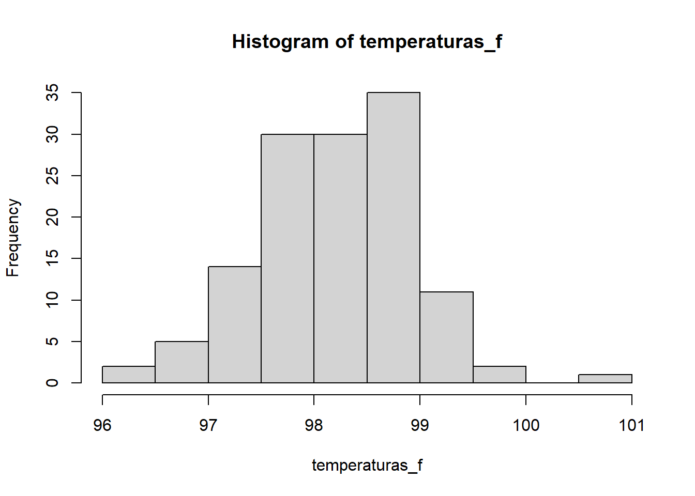
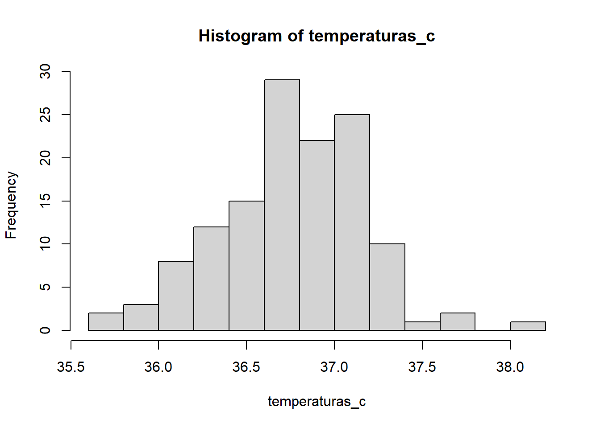
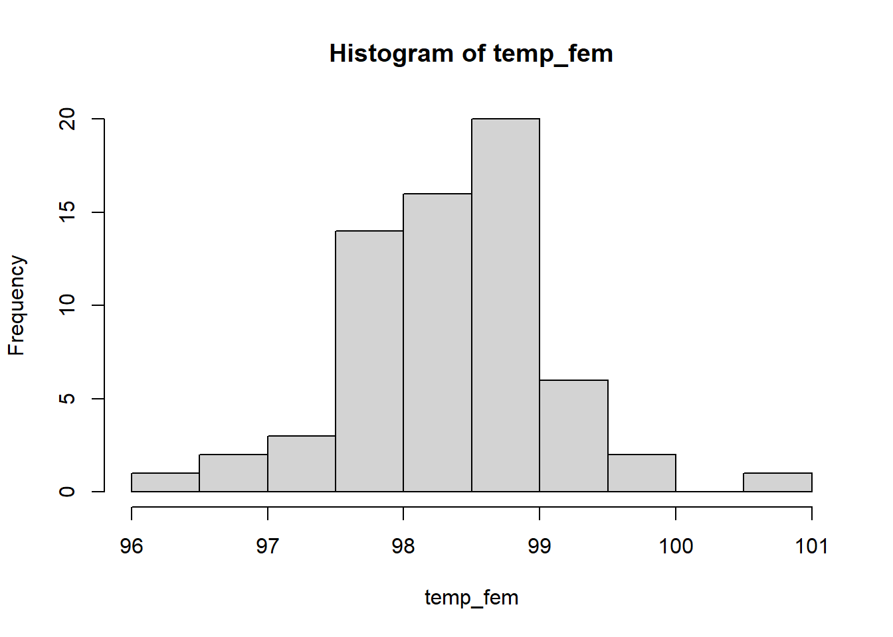
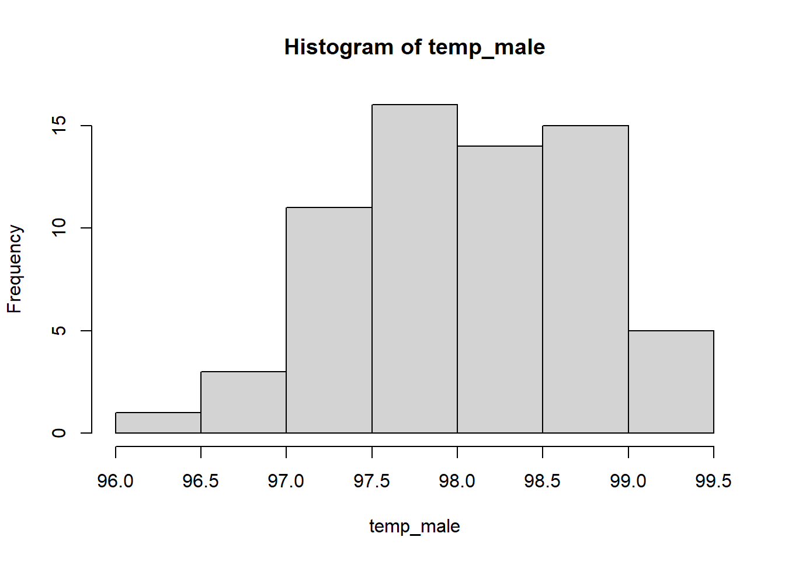
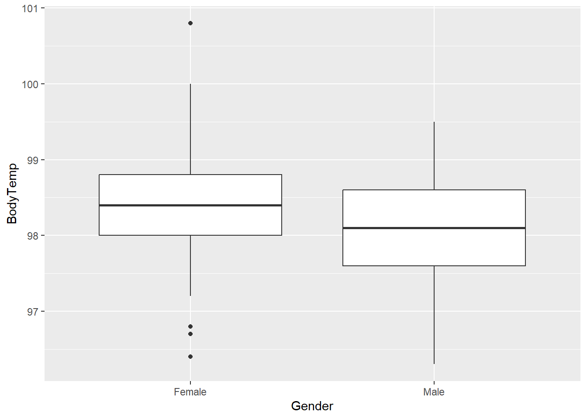

# Ativando os pacotes
library(readxl)
library(haven)
library(tidyverse)
library(car) #teste F de leveneExercício Testes Estatísticos
O artigo A Critical Appraisal of 98.6 Degrees F, the Upper Limit of the Normal Body Temperature, and Other Legacies of Carl Reinhold August Wunderlich? questiona a noção de que a verdadeira temperatura corporal media eh 98,6. Além disso, há também alguma dúvida sobre se as temperaturas corporais médias para as mulheres são iguais as dos homens (nível de significância de 0,01).
Os dados são o arquivo NormTemp.sas7bdat e o dicionário de dados:
- ID - Identificador do indivíduo
- BodyTemp - Temperatura corporal (graus Fahrenheit)
- BodyTempCelsius - Temperatura corporal (graus Celsius)
- Gender - Sexo do indivíduo
- HeartRate - Frequência cardiaca (batimentos por minuto)
Referencia https://jamanetwork.com/journals/jama/article-abstract/400116
# Determinando as temperaturas de referência
temp_ref_f <- 98.6
temp_ref_c <- (temp_ref_f-32)/1.8 #37Precisamos responder as seguintes dúvidas:
- A verdadeira temperatura corporal média é de 98.6º Fahrenheit ou 37º Celsuis?
- A temperatura média entre homens e mulheres é a mesma?
Observação: o nível de significância de 0,01
Conhecendo um pouco os nossos dados:
A tabela abaixo nos apresenta as primeiras 15 linhas da nossa tabela.
temp <- read_sas("dados/normtemp.sas7bdat")
temp <- temp |>
mutate(
BodyTempCelsius = round((BodyTemp-32)/1.8, 1)
) |>
relocate(BodyTempCelsius, .after = BodyTemp)
knitr::kable(head(temp, 15))| ID | BodyTemp | BodyTempCelsius | Gender | HeartRate |
|---|---|---|---|---|
| 1 | 96.3 | 35.7 | Male | 70 |
| 2 | 96.7 | 35.9 | Male | 71 |
| 3 | 96.9 | 36.1 | Male | 74 |
| 4 | 97.0 | 36.1 | Male | 80 |
| 5 | 97.1 | 36.2 | Male | 73 |
| 6 | 97.1 | 36.2 | Male | 75 |
| 7 | 97.1 | 36.2 | Male | 82 |
| 8 | 97.2 | 36.2 | Male | 64 |
| 9 | 97.3 | 36.3 | Male | 69 |
| 10 | 97.4 | 36.3 | Male | 70 |
| 11 | 97.4 | 36.3 | Male | 68 |
| 12 | 97.4 | 36.3 | Male | 72 |
| 13 | 97.4 | 36.3 | Male | 78 |
| 14 | 97.5 | 36.4 | Male | 70 |
| 15 | 97.5 | 36.4 | Male | 75 |
1. A verdadeira temperatura corporal média é de 98.6º Fahrenheit ou 37º Celsuis?
Iniciando nossas análises, para fazermos os testes paramétricos, primeiramente precisamos verificar os seguintes pontos:
- Os dados seguem uma distribuição Normal?
- Tem independência entre as observações?
# Criando a tabela das temperaturas em graus Fahrenheit
temperaturas_f <- temp$BodyTemp
# Criando a tabela das temperaturas em graus celsius
temperaturas_c <- temp$BodyTempCelsiusAbaixo faremos o teste para saber se a distribuição é uma normal:
# Teste de kolmogorov - Smirnov (KS) para saber se é uma distribuição normal
# H0: amostra provem de uma populacao normal
# H1: amostra nao provem de uma populacao normal
ks.test (temperaturas_f, "pnorm", mean(temperaturas_f),sd(temperaturas_f))Warning in ks.test.default(temperaturas_f, "pnorm", mean(temperaturas_f), :
ties should not be present for the Kolmogorov-Smirnov test
Asymptotic one-sample Kolmogorov-Smirnov test
data: temperaturas_f
D = 0.064727, p-value = 0.6474
alternative hypothesis: two-sidedCom este resultado de p-value não rejeitamos H0, dito isso, a distribuição é uma normal. Aproveitamos para verificar visualmente os histogramas:
hist(temperaturas_f)
hist(temperaturas_c)
Avaliando visualmente os histogramas, podemos confirmar que a temperatura segue uma distribuição normal.
Na sequencia faremos os Testes Estatísticos T:
# Testando se a temperatura média da população tem a média de 98.6 Fahrenheit.
# Teste t para uma amostra
# H0: mu = 98.6
# H1: mu <> 98.6
t.test(temperaturas_f, mu=98.6, conf.level = 0.99)
One Sample t-test
data: temperaturas_f
t = -5.4548, df = 129, p-value = 2.411e-07
alternative hypothesis: true mean is not equal to 98.6
99 percent confidence interval:
98.08111 98.41735
sample estimates:
mean of x
98.24923 # Testando se a temperatura média da população tem a média de 37º Celsius.
# Teste t para uma amostra
# H0: mu = 37
# H1: mu <> 37
t.test(temperaturas_c, mu=37, conf.level = 0.99)
One Sample t-test
data: temperaturas_c
t = -5.3818, df = 129, p-value = 3.361e-07
alternative hypothesis: true mean is not equal to 37
99 percent confidence interval:
36.71427 36.90111
sample estimates:
mean of x
36.80769 Dado o resultado do primeiro teste, p-value = 2.411e-07, podemos dizer que, estatisticamente a temperatura média da população não é igual a 98.6º Fahrenheit ou 37º Celsuis.
Seguindo nossa exploratória, será que a temperatura média é maior do que 98.6º Fahrenheit?
# Testando se a temperatura média da população tem a média de 98.6 Fahrenheit.
# Teste t para uma amostra
# H0: mu =< 98.6
# H1: mu > 98.6
t.test(temperaturas_f, mu=98.6, conf.level = 0.99, alternative = "greater")
One Sample t-test
data: temperaturas_f
t = -5.4548, df = 129, p-value = 1
alternative hypothesis: true mean is greater than 98.6
99 percent confidence interval:
98.09776 Inf
sample estimates:
mean of x
98.24923 Podemos afirmar, com total certeza, dado o retorno do p-value = 1, que a temperatura média da população é igual ou menor que 98.6 Fahrenheit.
Agora, será que ela é menor que 98.6 Fahrenheit?
# Testando se a temperatura média da população tem a média de 98.6 Fahrenheit.
# Teste t para uma amostra
# H0: mu => 98.6
# H1: mu < 98.6
t.test(temperaturas_f, mu=98.6, conf.level = 0.99, alternative = "less")
One Sample t-test
data: temperaturas_f
t = -5.4548, df = 129, p-value = 1.205e-07
alternative hypothesis: true mean is less than 98.6
99 percent confidence interval:
-Inf 98.40071
sample estimates:
mean of x
98.24923 Podemos afirmar, com 99% de confiança, que a temperatura é menor que 98.6 Fahrenheit.
2. A temperatura média entre homens e mulheres é a mesma?
Agora vamos avaliar as temperuaturas médias comparando os sexos masculino e feminino. Para fazermos essa análise, precisamos adotar alguns outros passos e verificações. Primeiramente criaremos as bases do sexo masculino e do sexo feminino.
# criando a base Female
temp_fem <- temp |>
filter(Gender == "Female")
temp_fem <- temp_fem$BodyTemp
# criando a base Male
temp_male <- temp |>
filter(Gender == "Male")
temp_male <- temp_male$BodyTempApós a criação das bases vamos fazer o teste se elas possuem uma distribuição normal:
Base com os dados das Mulheres
# Teste de kolmogorov - Smirnov (KS)
# H0: amostra provem de uma populacao normal
# H1: amostra nao provem de uma populacao normal
ks.test (temp_fem, "pnorm", mean(temp_fem),sd(temp_fem))Warning in ks.test.default(temp_fem, "pnorm", mean(temp_fem), sd(temp_fem)):
ties should not be present for the Kolmogorov-Smirnov test
Asymptotic one-sample Kolmogorov-Smirnov test
data: temp_fem
D = 0.10782, p-value = 0.4365
alternative hypothesis: two-sidedO teste para a base das temperaturas das mulheres teve como resultado o p-value = 0.4365. Desta forma, a hipótese nula nçao é rejeitada e podemos afirmar que a amostra tem uma distribuição normal.
Para confirmar, faremos uma analise visual dos dados:
hist(temp_fem)
Base com os dados dos Homens
Faremos o mesmo racional para a base de homens:
# Teste de kolmogorov - Smirnov (KS)
# H0: amostra provem de uma populacao normal
# H1: amostra nao provem de uma populacao normal
ks.test (temp_male, "pnorm", mean(temp_male),sd(temp_male))Warning in ks.test.default(temp_male, "pnorm", mean(temp_male), sd(temp_male)):
ties should not be present for the Kolmogorov-Smirnov test
Asymptotic one-sample Kolmogorov-Smirnov test
data: temp_male
D = 0.068515, p-value = 0.9204
alternative hypothesis: two-sidedO teste para a base das temperaturas dos homens teve como resultado o p-value = 0.9204. Desta forma, a hipótese nula não é rejeitada e podemos afirmar que a amostra tem uma distribuição normal.
Faremos agora a análise visual dos dados:
hist(temp_male)
Como próximo passo, vamos avaliar a homogeneidade da variância dos grupos. Pare esse teste usaremos o teste F de Levene
#colnames(variancia2) <- c("dado","grupo")
temp_group <- temp |>
select(BodyTemp,Gender)
leveneTest(BodyTemp ~ Gender, data=temp_group)Warning in leveneTest.default(y = y, group = group, ...): group coerced to
factor.Levene's Test for Homogeneity of Variance (center = median)
Df F value Pr(>F)
group 1 0.0635 0.8014
128 O resultado do teste F de Levene nos diz que não rejeitamos a hipótese nula, sendo assim, podemos dizer que a variância entre as amostrar tem homogeneidade.
Vamos ver visualmente também para confirmar o resultado.
temp_group |>
ggplot() +
geom_boxplot(aes(x = Gender, y = BodyTemp))
Como as variâncias são iguais, faremos o teste T para amostras com duas variáveis que possuem variâncias iguais:
# entao agora estamos testando se as medias sao iguais
# H0: media das mulheres (female) = media dos homens (male)
# H1: media das mulheres (female) <> media dos homens (male)
t.test(BodyTemp ~ Gender, data=temp_group, var.equal=TRUE, conf.level = 0.99)
Two Sample t-test
data: BodyTemp by Gender
t = 2.2854, df = 128, p-value = 0.02393
alternative hypothesis: true difference in means between group Female and group Male is not equal to 0
99 percent confidence interval:
-0.04168059 0.62014213
sample estimates:
mean in group Female mean in group Male
98.39385 98.10462 O resultado do teste, p-value = 0.02393, nos diz que a média das temperaturas das mulheres e dos homens são iguais. E ainda temos mais um dado bastante interessante:
- mean in group Female = 98.39385
- mean in group Male = 98.10462
Isso nos ajuda a confirmar que estatisticamente a média das temperaturas é igual.